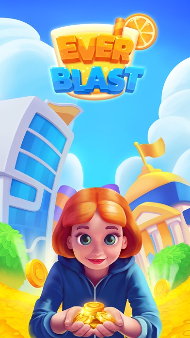
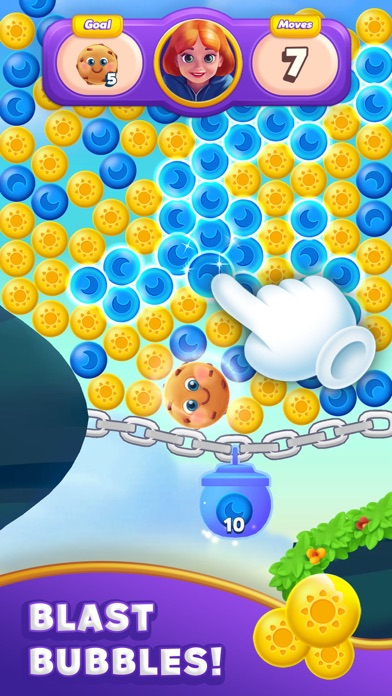
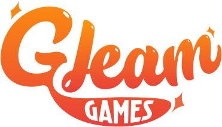
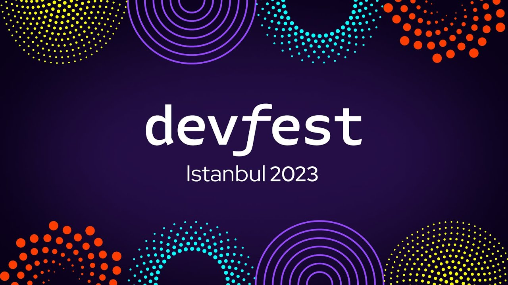
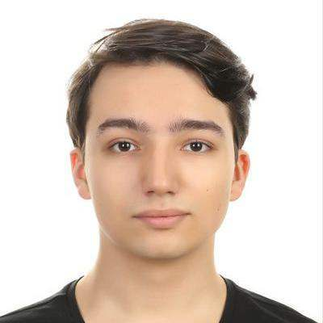

BERLIN, DE ↗
EXPERIENCE ACROSS
~20% faster loading
GoArt · RoofStacks 31% smaller builds
GoArt · RoofStacks 15 engineers led across 3 teams
Technical leadership · RoofStacks 7+ years in game engineering
From gameplay to live operations
01 / SELECTED WORK
Built for players.Engineered to scale. A selection of games and the systems
All work PC/Console Mobile
GAME ENGINEER 2022—2024
Subway Surfers City Gameplay systems and a custom dependency injection framework, adopted across the project.
Mobile Unity ECS Dependency injection
My contribution + Built the project’s dependency injection framework from the ground up. Implemented gameplay and systems in a data-oriented ECS architecture within a seven-engineer team. Worked with URP, Addressables, Jenkins CI/CD, and internal production tools. Explore the game ↗
GAME ENGINEER 2026—PRESENT
Craft World Cross-platform gameplay, live operations, and measurable performance improvements.
Mobile WebGL · iOS · Android Unity Live ops
My contribution + Delivered gameplay, meta, monetization, and live-ops tooling in a five-engineer team. Resolved production issues including in-app purchase failures. Worked across Unity/MVC/Zenject/UniRx and a TypeScript, GraphQL, and PostgreSQL backend. Explore the game ↗
GAME ENGINEER 2022
SEED Core gameplay engineering for an ambitious multiplayer simulation.
PC Multiplayer ECS SpatialOS
My contribution + Contributed to core gameplay systems using Klang’s in-house ECS framework. Worked with SpatialOS on networked gameplay and distributed simulation features. Explore the game ↗
GAME ARCHITECT 2025—2026
GoArt A full-system refactor for a mobile metaverse experience, supported by reusable engineering frameworks.
Mobile Architecture Code generation UI Toolkit
My contribution + Led the GoArt refactor: 31% smaller builds, approximately 20% faster loading, and approximately 15% higher runtime FPS. Designed shared WebSocket communication, MVC code generation, and Unity UI Toolkit MVVM frameworks. Led 15 engineers across three teams and recruited approximately half the engineering organization. View GoArt on Google Play ↗
GAME ARCHITECT 2025—2026
Olpamis In-house entity component system framework and code generation for a seven-engineer PC/console team.
PC/Console In-house ECS Code generation
My contribution + Designed an in-house entity component system framework and code-generation pipeline powering the project’s gameplay. Architected a performant MVVM framework for the game’s UI. Led technical direction for the seven-engineer AA team as part of a broader three-team engineering organization. Explore Olpamis at Roof Games ↗



LEAD GAME DEVELOPER 2021—2022
EverBlast Core game systems, Unity production tools, and the engineering team behind a mobile puzzle adventure.
Mobile Unity Production tools Team leadership
My contribution + Developed core systems and Unity production tooling at Gleam Games. Built an eight-engineer team over approximately six months. View EverBlast on the App Store ↗
More games. More ways to play. EARLIER WORK & GAME JAMS + Mobile
Bramble Lead Game Developer · 2020–2021
A gamified parent–child communication app. Feature architecture, legacy refactoring, and an approximately 50 MB reduction in build size.
PC
BORA: Efsane Doğuyor Game Developer · Marvy Games · 2019–2020
Authoritative MMOFPS networking, movement, combat, and backend integration with Forge Networking Remastered.
PC · Game jams
Surgeon Rush / Getting Old Ludum Dare 49 & 50 · 2021–2022
Small, playful experiments built for game jams.
Play Surgeon Rush ↗ PC · Browser
Rusna Independent project · 2018
A multiplayer browser survival game, listed among my early LinkedIn projects.
03 / EXPERIENCE
Hands on.Big picture. I work where gameplay, architecture, and people meet — building systems, solving production problems, and helping engineering teams grow.
JAN 2026 — PRESENT VOYA Games CURRENT Game Engineer
Berlin, Germany JAN 2025 — JAN 2026 RoofStacks Game Architect
Istanbul, Turkey APR 2024 — JAN 2025 Ringtail Interactive Senior Game Engineer
Stockholm, Sweden JUL 2022 — JAN 2024 SYBO Game Engineer
Copenhagen, Denmark FEB 2022 — JUN 2022 Klang Games Game Engineer
Berlin, Germany Earlier experience + APR 2021 — FEB 2022 Gleam Games Lead Game Developer
Istanbul, Turkey JUL 2020 — MAR 2021 Bramble App Lead Game Developer
Singapore MAR 2020 — JUL 2020 HiGames Lead Game Developer
Istanbul, Turkey · Approximately one playable prototype per week. JUL 2019 — FEB 2020 Marvy Games Game Developer
Istanbul, Turkey
04 / TALKS & WORKSHOPS
Build it.Share what you learn. Technical talks, workshops,

▶ WATCH DEVFEST ISTANBUL · 2023 Road to Metaverse: A presentation on the GoArt Creator SDK at GDG Istanbul’s developer conference, sharing the creator tools developed with the GoArt team.
Watch the recording ↗ 05 technical workshops
Sharing practical engineering experience with teams and developer communities, including a public DevFest session.
Level UP Academy acknowledgment ↗

05 / A LITTLE ABOUT ME
Emre. Süleyman Emre Fıstıkçıoğlu
I care about how a game feels — and how well its systems hold up behind the scenes.
My work spans mobile and PC/console games, multiplayer simulations, creator tools, and game software architecture. I bring hands-on engineering together with technical direction, from pre-production through live operations.
Gameplay & architecture Unity · Unreal Engine · C# · C++ · ECS / DOD · Dependency injection · MVC / MVVM
Multiplayer & performance Deterministic simulation · Authoritative servers · Profiling · Addressables · WebSockets
Tools & production Code generation · Roslyn analyzers · UI Toolkit · Jenkins · CI/CD · TypeScript